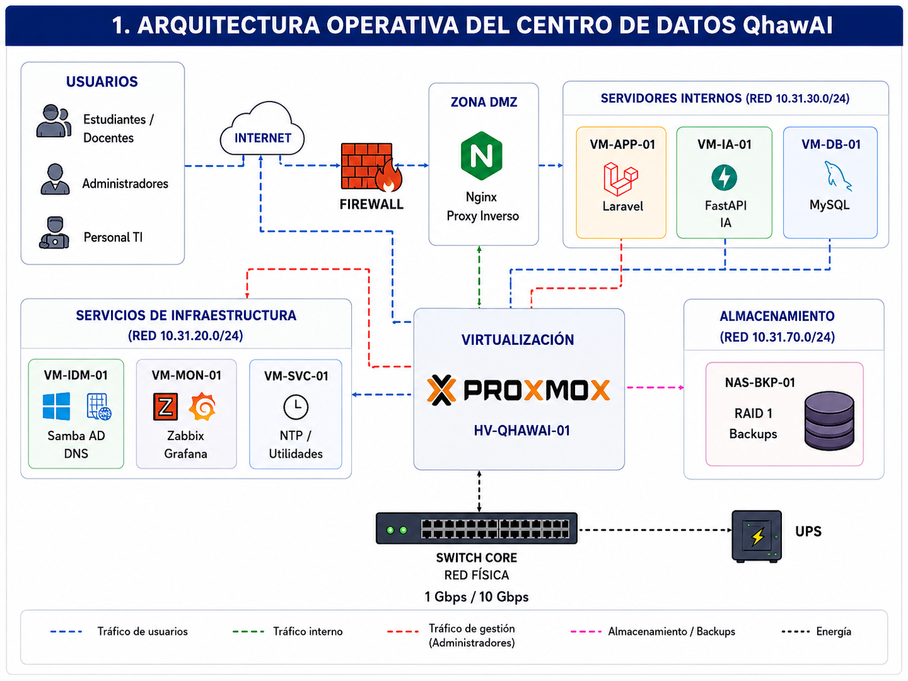
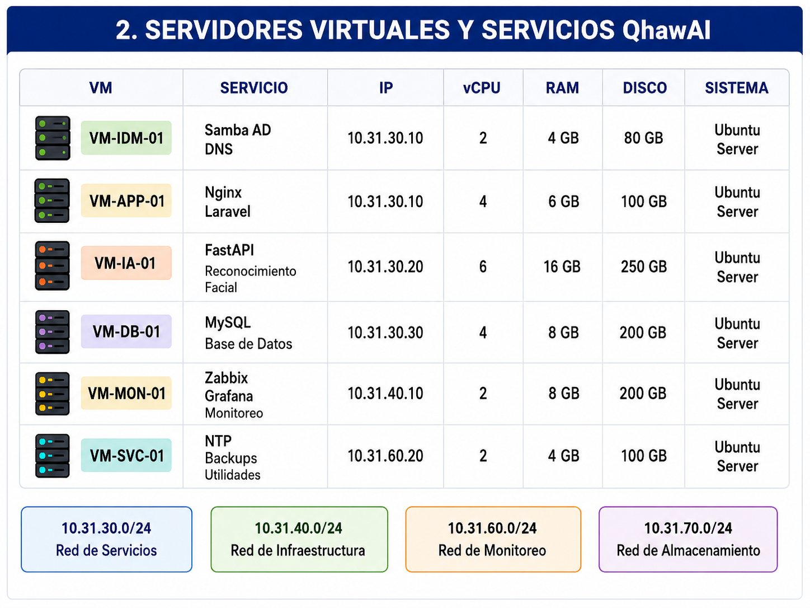
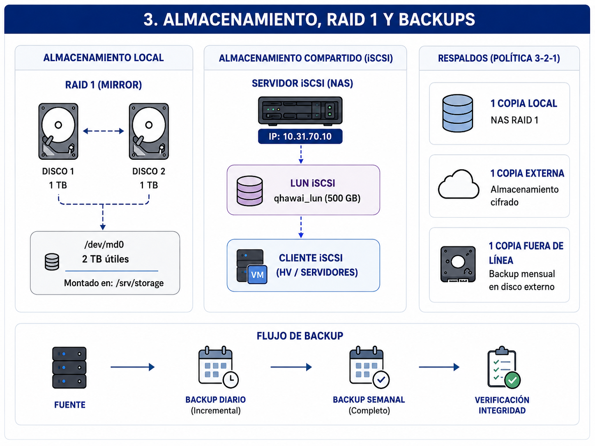
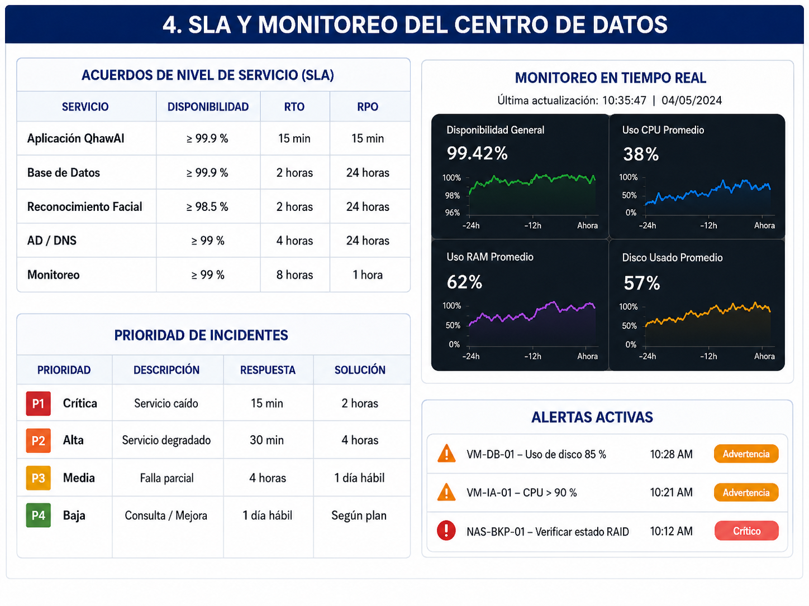
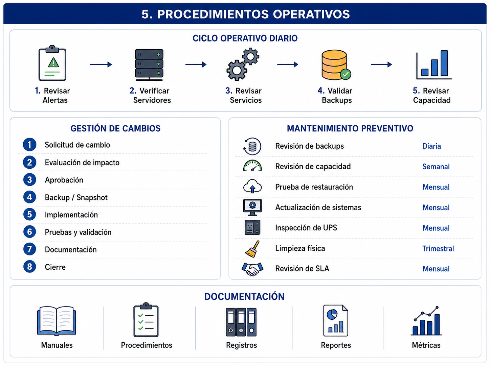
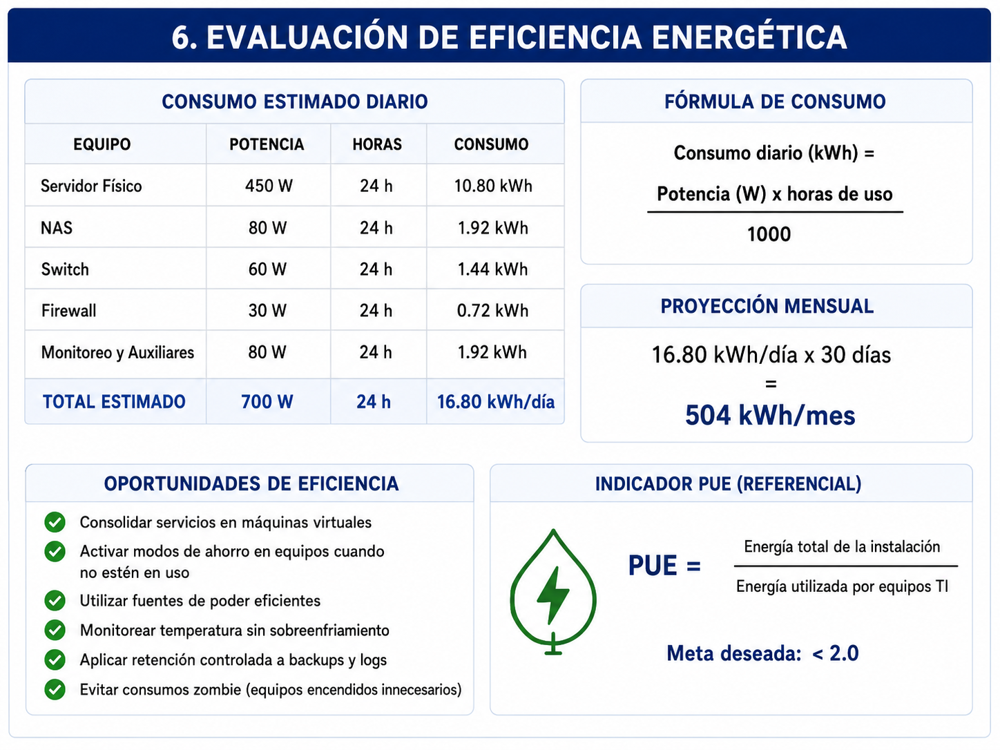
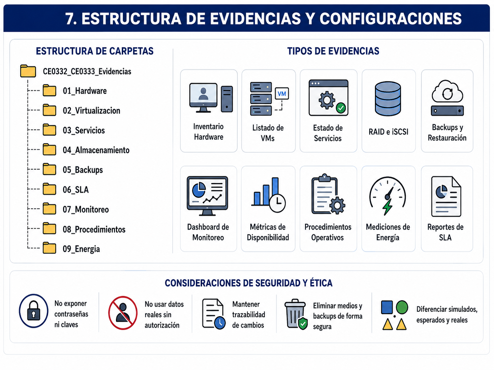

Entregable 6 — Implementación y Control de Centro de Datos
Configuración de servidores físicos y virtuales, servicios institucionales, almacenamiento redundante, políticas de respaldo, SLA, monitoreo, procedimientos operativos y análisis de eficiencia para la infraestructura de QhawAI.
Resumen Ejecutivo
El presente entregable documenta la implementación y control de la infraestructura de centro de datos diseñada para soportar los servicios tecnológicos de QhawAI.
La arquitectura considera un servidor de virtualización, máquinas virtuales para identidad, DNS, aplicación, inteligencia artificial, base de datos y monitoreo, además de almacenamiento redundante, copias de seguridad y comunicación con servicios externos autorizados.
Se definen procedimientos de creación de máquinas virtuales, configuración de servicios, RAID, almacenamiento iSCSI, backups automatizados, restauración, acuerdos de nivel de servicio, monitoreo de recursos, gestión de incidencias y mantenimiento.
También se incluye una evaluación de consumo eléctrico, aprovechamiento de recursos, capacidad disponible y oportunidades de mejora energética.
1. Alcance de la Implementación
El alcance comprende el servidor físico, hipervisor, máquinas virtuales, servicios internos, almacenamiento, copias de seguridad, monitoreo y procedimientos necesarios para operar QhawAI.
| Componente | Función | Tecnología propuesta | Estado |
|---|---|---|---|
| HV-QHAWAI-01 | Servidor de virtualización. | Proxmox VE o equivalente. | Preparado para laboratorio. |
| VM-IDM-01 | Identidad y directorio. | Samba Active Directory. | Pendiente de evidencia. |
| VM-DNS-01 | Resolución interna. | DNS de Samba o BIND9. | Pendiente de evidencia. |
| VM-APP-01 | Nginx y Laravel. | Ubuntu Server. | Pendiente de evidencia. |
| VM-IA-01 | FastAPI y reconocimiento facial. | Ubuntu y Docker. | Pendiente de evidencia. |
| VM-DB-01 | Base de datos. | MySQL. | Pendiente de evidencia. |
| VM-MON-01 | Monitoreo y alertas. | Zabbix, Grafana o equivalente. | Pendiente de evidencia. |
| NAS-BKP-01 | Backups y almacenamiento. | RAID 1 e iSCSI. | Pendiente de evidencia. |
2. Arquitectura Operativa Implementada

| Capa | Componentes | Responsabilidad |
|---|---|---|
| Física | Servidor, NAS, UPS, switch y firewall. | Capacidad, energía y conectividad. |
| Virtualización | Hipervisor, máquinas virtuales y snapshots. | Aislamiento y administración de recursos. |
| Servicios | AD, DNS, Nginx, Laravel, FastAPI y MySQL. | Operación funcional de QhawAI. |
| Datos | RAID, NAS, SAN lógico y backups. | Persistencia y recuperación. |
| Control | Monitoreo, SLA, logs y procedimientos. | Disponibilidad y mejora continua. |
3. Configuración del Servidor Físico
3.1 Especificaciones de referencia
| Recurso | Capacidad propuesta | Justificación |
|---|---|---|
| Procesador | 12 núcleos / 24 hilos o equivalente. | Virtualización y procesamiento concurrente. |
| Memoria RAM | 64 GB ECC. | Máquinas virtuales y margen de crecimiento. |
| Discos del sistema | 2 × 1 TB SSD en espejo. | Redundancia y rendimiento. |
| Almacenamiento adicional | NAS de 4 TB bruto en RAID 1. | Backups y repositorio. |
| Interfaces de red | 2 × 1 Gbps o superior. | Separación de gestión y servicios. |
| Energía | UPS de 1500 VA o superior. | Continuidad breve y apagado controlado. |
3.2 Verificación del hardware en Linux
# Procesador lscpu # Memoria free -h sudo dmidecode --type memory # Discos lsblk -o NAME,SIZE,TYPE,FSTYPE,MOUNTPOINT sudo smartctl -a /dev/sda # Interfaces ip -br address ethtool enp1s0 # Información general hostnamectl
3.3 Configuración de hostname y red
sudo hostnamectl set-hostname HV-QHAWAI-01 sudo nano /etc/hosts 127.0.0.1 localhost 10.31.40.20 HV-QHAWAI-01.qhawai.local HV-QHAWAI-01
4. Configuración de Servidores Virtuales

4.1 Distribución de máquinas virtuales
| VM | Servicio | vCPU | RAM | Disco | Red |
|---|---|---|---|---|---|
| VM-IDM-01 | Samba AD y DNS. | 2 | 4 GB | 80 GB | Gestión / Servicios. |
| VM-APP-01 | Nginx y Laravel. | 4 | 6 GB | 100 GB | Servidores / DMZ controlada. |
| VM-IA-01 | FastAPI e IA. | 6 | 16 GB | 250 GB | Servidores. |
| VM-DB-01 | MySQL. | 4 | 8 GB | 200 GB | Datos internos. |
| VM-MON-01 | Zabbix, Grafana y logs. | 4 | 8 GB | 200 GB | Monitoreo. |
| VM-SVC-01 | Backups y servicios auxiliares. | 2 | 4 GB | 100 GB | Gestión. |
4.2 Ejemplo de creación de VM en Proxmox
# Crear máquina virtual qm create 101 \ --name VM-APP-01 \ --memory 6144 \ --cores 4 \ --net0 virtio,bridge=vmbr0 # Agregar disco qm set 101 \ --scsihw virtio-scsi-pci \ --scsi0 local-lvm:100 # Agregar ISO qm set 101 \ --ide2 local:iso/ubuntu-server.iso,media=cdrom # Orden de arranque qm set 101 \ --boot order=scsi0\;ide2 # Iniciar qm start 101 # Verificar qm status 101 qm config 101
4.3 Control de recursos
# Limitar CPU y memoria de una VM qm set 101 --cores 4 --memory 6144 --balloon 4096 # Habilitar agente invitado qm set 101 --agent enabled=1 # Configurar inicio automático qm set 101 --onboot 1 # Definir prioridad de arranque qm set 101 --startup order=2,up=30,down=30
5. Implementación de Servicios Institucionales
5.1 Directorio centralizado mediante Samba AD
El servicio de directorio permite centralizar usuarios, grupos, autenticación y políticas administrativas. Su uso es apropiado cuando la institución dispone de equipos que requieren identidad centralizada.
sudo apt update sudo apt install \ samba \ krb5-config \ winbind \ smbclient \ dnsutils \ -y sudo systemctl disable --now smbd nmbd winbind sudo samba-tool domain provision \ --use-rfc2307 \ --realm=QHAWAI.LOCAL \ --domain=QHAWAI \ --server-role=dc \ --dns-backend=SAMBA_INTERNAL
5.2 Activación del servicio AD
sudo systemctl unmask samba-ad-dc sudo systemctl enable samba-ad-dc sudo systemctl start samba-ad-dc sudo systemctl status samba-ad-dc
5.3 Verificación del dominio
samba-tool domain info 127.0.0.1 samba-tool user list samba-tool group list host -t A qhawai.local 127.0.0.1 host -t SRV _ldap._tcp.qhawai.local 127.0.0.1 host -t SRV _kerberos._udp.qhawai.local 127.0.0.1
5.4 Creación de usuarios y grupos
samba-tool group add INFRAESTRUCTURA samba-tool group add SEGURIDAD samba-tool group add AUDITORIA samba-tool user create admin.infra samba-tool user create auditor.seguridad samba-tool group addmembers \ INFRAESTRUCTURA \ admin.infra samba-tool group addmembers \ AUDITORIA \ auditor.seguridad
5.5 Servicio DNS interno
El DNS deberá resolver los nombres internos de servidores y servicios. Si se utiliza Samba AD con DNS interno, la zona se administra mediante las herramientas del dominio.
samba-tool dns add \ 127.0.0.1 \ qhawai.local \ vm-app-01 \ A \ 10.31.30.10 \ -U Administrator samba-tool dns add \ 127.0.0.1 \ qhawai.local \ vm-ia-01 \ A \ 10.31.30.20 \ -U Administrator samba-tool dns add \ 127.0.0.1 \ qhawai.local \ vm-db-01 \ A \ 10.31.30.30 \ -U Administrator
5.6 Servicios complementarios
| Servicio | Función | Servidor | Control |
|---|---|---|---|
| DNS | Resolución de nombres. | VM-IDM-01. | Consultas internas autorizadas. |
| NTP | Sincronización horaria. | VM-SVC-01. | Fuente horaria controlada. |
| Nginx | Proxy reverso HTTPS. | VM-APP-01. | TLS y registros. |
| Laravel | Backend principal. | VM-APP-01. | Acceso controlado. |
| FastAPI | Servicio biométrico. | VM-IA-01. | Red interna. |
| MySQL | Base de datos. | VM-DB-01. | Sin exposición pública. |
6. Implementación de Servicios de QhawAI
6.1 Estructura Docker
services:
nginx:
image: nginx:1.27-alpine
container_name: qhawai-nginx
ports:
- "443:443"
depends_on:
- laravel
restart: unless-stopped
laravel:
image: qhawai/laravel:1.0.0
container_name: qhawai-laravel
restart: unless-stopped
networks:
- app_network
- data_network
fastapi:
image: qhawai/fastapi:1.0.0
container_name: qhawai-fastapi
user: "1001:1001"
read_only: true
restart: unless-stopped
networks:
- app_network
mysql:
image: mysql:8.0
container_name: qhawai-mysql
restart: unless-stopped
networks:
- data_network
volumes:
- mysql_data:/var/lib/mysql
networks:
app_network:
internal: true
data_network:
internal: true
volumes:
mysql_data:
6.2 Comandos de control
docker compose up -d docker compose ps docker stats docker logs qhawai-laravel docker logs qhawai-fastapi docker inspect qhawai-fastapi docker compose restart docker compose down
7. Implementación de Almacenamiento

7.1 RAID 1 mediante mdadm
RAID 1 mantiene una copia espejo entre dos discos. Aumenta la disponibilidad ante la falla de un disco, pero no reemplaza las copias de seguridad.
sudo apt update sudo apt install mdadm -y sudo mdadm \ --create /dev/md0 \ --level=1 \ --raid-devices=2 \ /dev/sdb \ /dev/sdc cat /proc/mdstat sudo mdadm --detail /dev/md0 sudo mkfs.ext4 /dev/md0 sudo mkdir -p /srv/storage sudo mount /dev/md0 /srv/storage
7.2 Persistencia del montaje
sudo blkid /dev/md0 sudo nano /etc/fstab UUID=[UUID_DEL_RAID] /srv/storage ext4 defaults,nofail 0 2 sudo mount -a df -h /srv/storage
7.3 Prueba de estado del RAID
cat /proc/mdstat sudo mdadm --detail /dev/md0 sudo smartctl -a /dev/sdb sudo smartctl -a /dev/sdc
7.4 Implementación de SAN lógico mediante iSCSI
Para cumplir el escenario de almacenamiento compartido se plantea un SAN lógico mediante iSCSI. El NAS presenta un volumen al hipervisor o a un servidor autorizado.
# Servidor de almacenamiento sudo apt install targetcli-fb -y sudo targetcli /backstores/fileio create \ qhawai_lun \ /srv/storage/qhawai-san.img \ 500G /iscsi create iqn.2026-01.local.qhawai:storage /iscsi/iqn.2026-01.local.qhawai:storage/tpg1/luns create \ /backstores/fileio/qhawai_lun /iscsi/iqn.2026-01.local.qhawai:storage/tpg1/portals create \ 10.31.70.10 saveconfig exit
7.5 Cliente iSCSI
sudo apt install open-iscsi -y sudo iscsiadm \ -m discovery \ -t sendtargets \ -p 10.31.70.10 sudo iscsiadm \ -m node \ --login lsblk sudo iscsiadm \ -m session
8. Políticas de Respaldo y Restauración
8.1 Política 3-2-1
| Activo | Frecuencia | Copia local | Copia externa | Retención |
|---|---|---|---|---|
| Base de datos | Diaria. | NAS. | Copia cifrada. | 30 días. |
| Máquinas virtuales | Semanal. | NAS o PBS. | Copia mensual. | 12 semanas. |
| Configuraciones | Después de cada cambio. | Repositorio interno. | Repositorio cifrado. | 10 versiones. |
| Logs críticos | Diaria. | Servidor de monitoreo. | Archivo protegido. | 90–180 días. |
8.2 Backup de máquina virtual en Proxmox
vzdump 101 \ --storage backup-nas \ --mode snapshot \ --compress zstd \ --remove 0 ls -lh /mnt/pve/backup-nas/dump/
8.3 Programación de backup
sudo crontab -e # Backup diario de MySQL a las 02:00 0 2 * * * /usr/local/bin/qhawai-backup-db.sh # Verificación semanal de archivos 0 4 * * 0 /usr/local/bin/verificar-backups.sh
8.4 Prueba de restauración
| ID | Prueba | Resultado esperado | Resultado obtenido | Estado |
|---|---|---|---|---|
| RST-01 | Restaurar base MySQL. | Base íntegra y funcional. | Pendiente. | No ejecutada. |
| RST-02 | Restaurar VM-APP-01. | Inicio dentro del RTO. | Pendiente. | No ejecutada. |
| RST-03 | Recuperar configuración del hipervisor. | Configuración validada. | Pendiente. | No ejecutada. |
| RST-04 | Verificar checksum. | Integridad correcta. | Pendiente. | No ejecutada. |
9. Definición de SLA

9.1 Acuerdos de nivel de servicio
| Servicio | Disponibilidad | Horario | RTO | RPO |
|---|---|---|---|---|
| Aplicación QhawAI | ≥ 99 %. | Horario operativo institucional. | 2 horas. | 15 minutos. |
| Base de datos | ≥ 99 %. | 24 × 7. | 4 horas. | 24 horas o menor. |
| Reconocimiento facial | ≥ 98.5 %. | Horario académico. | 2 horas. | No aplica. |
| DNS e identidad | ≥ 99 %. | 24 × 7. | 4 horas. | 24 horas. |
| Monitoreo | ≥ 98 %. | 24 × 7. | 8 horas. | 1 hora. |
9.2 Prioridad de incidentes
| Prioridad | Descripción | Respuesta inicial | Objetivo de solución |
|---|---|---|---|
| P1 Crítica | Sistema principal no disponible. | 15 minutos. | 2 horas. |
| P2 Alta | Servicio degradado o función crítica afectada. | 30 minutos. | 4 horas. |
| P3 Media | Falla parcial sin interrupción total. | 4 horas. | 1 día hábil. |
| P4 Baja | Consulta o mejora no urgente. | 1 día hábil. | Según planificación. |
9.3 Cálculo de disponibilidad
Disponibilidad (%) =
(Tiempo total - Tiempo de indisponibilidad)
------------------------------------------------ × 100
Tiempo total
10. Implementación de Monitoreo
10.1 Herramientas
| Herramienta | Función | Objetos monitoreados |
|---|---|---|
| Zabbix | Disponibilidad y alertas. | Servidores, red, servicios y UPS. |
| Prometheus | Recolección de métricas. | CPU, RAM, disco y aplicaciones. |
| Grafana | Dashboards y visualización. | Métricas consolidadas. |
| Wazuh | Seguridad y eventos. | Logs, accesos y cambios. |
| SMART | Salud de discos. | SSD y HDD. |
10.2 Instalación del agente Zabbix
sudo apt update sudo apt install zabbix-agent2 -y sudo nano /etc/zabbix/zabbix_agent2.conf Server=10.31.60.10 ServerActive=10.31.60.10 Hostname=VM-APP-01 sudo systemctl enable zabbix-agent2 sudo systemctl restart zabbix-agent2 sudo systemctl status zabbix-agent2
10.3 Métricas obligatorias
| Métrica | Umbral preventivo | Umbral crítico | Acción |
|---|---|---|---|
| CPU | 70 % durante 15 min. | 90 % durante 5 min. | Analizar procesos y capacidad. |
| RAM | 75 %. | 90 %. | Ajustar VM o servicios. |
| Disco | 75 %. | 90 %. | Liberar o ampliar. |
| Temperatura | Según fabricante. | Sobre límite seguro. | Revisar ventilación. |
| RAID degradado | No aplica. | Inmediato. | Reemplazar disco. |
| Backup fallido | No aplica. | Primer fallo. | Reejecutar y escalar. |
| Servicio detenido | No aplica. | Inmediato. | Reiniciar y analizar. |
10.4 Comandos de control operativo
# Estado de servicios systemctl --failed # Uso de recursos top free -h df -h iostat -xz 1 # Máquinas virtuales qm list # Estado del RAID cat /proc/mdstat mdadm --detail /dev/md0 # Contenedores docker compose ps docker stats # Logs journalctl -p warning --since today
11. Procedimientos Operativos

11.1 Procedimiento de inicio diario
| Paso | Actividad | Evidencia |
|---|---|---|
| 1 | Revisar alertas críticas. | Dashboard o correo. |
| 2 | Verificar máquinas virtuales. | Captura del hipervisor. |
| 3 | Revisar servicios principales. | Estado de Nginx, Laravel, FastAPI y MySQL. |
| 4 | Validar backup anterior. | Log y checksum. |
| 5 | Revisar capacidad. | CPU, RAM y disco. |
11.2 Gestión de cambios
Solicitud → Evaluación de impacto → Aprobación → Backup o snapshot → Implementación → Pruebas → Validación → Documentación → Cierre
11.3 Mantenimiento preventivo
| Actividad | Frecuencia | Responsable | Evidencia |
|---|---|---|---|
| Revisión de backups. | Diaria. | Administrador. | Log de backup. |
| Revisión de capacidad. | Semanal. | Infraestructura. | Dashboard. |
| Prueba de restauración. | Mensual. | Infraestructura y BD. | Acta de prueba. |
| Actualización de servidores. | Mensual o por severidad. | Infraestructura. | Registro de cambio. |
| Inspección de UPS. | Mensual. | Infraestructura. | Registro técnico. |
| Limpieza física. | Trimestral. | Personal autorizado. | Checklist. |
| Revisión de SLA. | Mensual. | Responsable del servicio. | Reporte de disponibilidad. |
12. Evaluación de Eficiencia Energética

12.1 Consumo estimado
| Equipo | Potencia estimada | Horas diarias | Consumo diario |
|---|---|---|---|
| Servidor físico | 450 W | 24 h | 10.8 kWh. |
| NAS | 80 W | 24 h | 1.92 kWh. |
| Switch | 60 W | 24 h | 1.44 kWh. |
| Firewall | 30 W | 24 h | 0.72 kWh. |
| Monitoreo y auxiliares | 80 W | 24 h | 1.92 kWh. |
| Total estimado | 700 W | 24 h | 16.8 kWh/día |
12.2 Fórmula de consumo
Consumo diario (kWh) =
Potencia en watts × horas de uso
--------------------------------
1000
12.3 Proyección mensual
16.8 kWh/día × 30 días = 504 kWh/mes
12.4 Medidas de eficiencia
12.5 Indicador PUE de referencia
PUE = Energía total de la instalación -------------------------------- Energía utilizada por equipos TI
En un micro centro de datos puede no existir instrumentación suficiente para obtener un PUE certificado. Se utilizará únicamente como indicador de referencia cuando existan mediciones separadas.
13. Indicadores Operativos
| Indicador | Fórmula o medición | Meta | Resultado |
|---|---|---|---|
| Disponibilidad del servicio | Tiempo operativo / tiempo total × 100. | ≥ 99 %. | Pendiente. |
| Uso promedio de CPU | Promedio mensual. | < 70 %. | Pendiente. |
| Uso promedio de RAM | Promedio mensual. | < 75 %. | Pendiente. |
| Uso de almacenamiento | Espacio usado / capacidad × 100. | < 75 %. | Pendiente. |
| Backups exitosos | Backups correctos / programados × 100. | ≥ 98 %. | Pendiente. |
| Restauraciones aprobadas | Pruebas exitosas / ejecutadas × 100. | 100 %. | Pendiente. |
| Incidentes dentro del SLA | Incidentes cumplidos / total × 100. | ≥ 95 %. | Pendiente. |
| Consumo energético | Lectura mensual en kWh. | Tendencia controlada. | Pendiente. |
14. Gestión de Evidencias

| Código | Evidencia | Criterio | Estado |
|---|---|---|---|
| EV-DC-01 | Inventario del servidor físico. | Servidores físicos. | Pendiente. |
| EV-DC-02 | Listado de máquinas virtuales. | Virtualización. | Pendiente. |
| EV-DC-03 | Estado de AD y DNS. | Servicios. | Pendiente. |
| EV-DC-04 | Estado de Nginx, Laravel y FastAPI. | Servicios QhawAI. | Pendiente. |
| EV-DC-05 | Estado del RAID. | Almacenamiento. | Pendiente. |
| EV-DC-06 | Sesión iSCSI activa. | SAN. | Pendiente. |
| EV-DC-07 | Backup automatizado. | Política de respaldo. | Pendiente. |
| EV-DC-08 | Prueba de restauración. | Recuperación. | Pendiente. |
| EV-DC-09 | Dashboard de monitoreo. | Monitoreo. | Pendiente. |
| EV-DC-10 | Reporte mensual de SLA. | SLA. | Pendiente. |
| EV-DC-11 | Checklist operativo. | Procedimientos. | Pendiente. |
| EV-DC-12 | Medición energética. | Eficiencia. | Pendiente. |
14.1 Estructura de carpetas
CE0332_CE0333_Evidencias/
│
├── 01_Hardware/
│ ├── lscpu.png
│ ├── memoria.png
│ ├── discos.png
│ └── interfaces.png
│
├── 02_Virtualizacion/
│ ├── listado-vm.png
│ ├── recursos-vm.png
│ ├── red-virtual.png
│ └── snapshots.png
│
├── 03_Servicios/
│ ├── samba-ad.png
│ ├── dns.png
│ ├── nginx.png
│ ├── fastapi.png
│ └── mysql.png
│
├── 04_Almacenamiento/
│ ├── raid-status.png
│ ├── smart-disks.png
│ ├── iscsi-target.png
│ └── iscsi-session.png
│
├── 05_Backups/
│ ├── backup-vm.png
│ ├── backup-db.png
│ ├── checksum.png
│ └── restauracion.png
│
├── 06_SLA/
│ ├── disponibilidad.pdf
│ ├── incidentes.pdf
│ └── cumplimiento-sla.pdf
│
├── 07_Monitoreo/
│ ├── dashboard.png
│ ├── alertas.png
│ ├── capacidad.png
│ └── logs/
│
├── 08_Procedimientos/
│ ├── inicio-diario.pdf
│ ├── mantenimiento.pdf
│ ├── cambios.pdf
│ └── incidentes.pdf
│
└── 09_Energia/
├── consumo-kwh.pdf
├── ups.png
└── eficiencia.pdf
15. Consideraciones Éticas y Operativas
16. Conclusiones
La arquitectura propuesta integra servidores virtuales, servicios institucionales, almacenamiento redundante, copias de seguridad y monitoreo centralizado.
La virtualización permite consolidar recursos y separar las funciones de identidad, aplicación, inteligencia artificial, base de datos y monitoreo.
RAID 1, NAS e iSCSI ofrecen redundancia y almacenamiento compartido, mientras la política 3-2-1 permite fortalecer la recuperación.
Los SLA y umbrales de monitoreo convierten la operación en un proceso medible y permiten detectar degradaciones antes de que produzcan interrupciones graves.
La eficiencia energética debe evaluarse mediante mediciones reales, evitando sobredimensionamiento y conservando la disponibilidad de los servicios críticos.
17. Referencias y Marcos Utilizados
| Marco o tecnología | Aplicación |
|---|---|
| Uptime Institute | Disponibilidad y redundancia. |
| TIA-942 | Infraestructura de centros de datos. |
| ISO/IEC 22237 | Instalaciones y operación. |
| ISO/IEC 27001 y 27002 | Seguridad de infraestructura y servicios. |
| Proxmox VE | Virtualización y administración de VM. |
| Samba Active Directory | Identidad, dominio y DNS. |
| mdadm e iSCSI | RAID y almacenamiento compartido. |
| Zabbix / Grafana | Monitoreo y visualización. |
| Código de Ética ACM | Responsabilidad, privacidad y sostenibilidad. |
18. Anexos
| Anexo | Descripción | Archivo | Estado |
|---|---|---|---|
| Anexo A | Arquitectura operativa. | e6-arquitectura-operativa-qhawai.png | Pendiente de generar. |
| Anexo B | Servidores y servicios. | e6-servidores-servicios-qhawai.png | Pendiente de generar. |
| Anexo C | Almacenamiento y backups. | e6-almacenamiento-backup-qhawai.png | Pendiente de generar. |
| Anexo D | SLA y monitoreo. | e6-sla-monitoreo-qhawai.png | Pendiente de generar. |
| Anexo E | Procedimientos operativos. | e6-procedimientos-operativos-qhawai.png | Pendiente de generar. |
| Anexo F | Eficiencia energética. | e6-eficiencia-energetica-qhawai.png | Pendiente de generar. |
| Anexo G | Estructura de evidencias. | e6-estructura-evidencias-qhawai.png | Pendiente de generar. |
| Anexo H | Configuraciones y métricas. | Carpeta de evidencias. | Pendiente. |
Verificación de la Rúbrica CE0332–CE0333
| Criterio | Evidencia preparada | Estado actual |
|---|---|---|
| Servidores físicos y virtuales | Especificaciones, VM, recursos y comandos de configuración. | Preparado; falta evidencia. |
| Servicios AD, DNS y otros | Samba AD, DNS, Nginx, Laravel, FastAPI y MySQL. | Preparado; falta validación. |
| Almacenamiento RAID y SAN | RAID 1, NAS e iSCSI. | Preparado; falta captura. |
| Políticas de respaldo | Estrategia 3-2-1, automatización y restauración. | Falta ejecutar pruebas. |
| Definición de SLA | Disponibilidad, RTO, RPO y prioridades. | Desarrollado. |
| Implementación de monitoreo | Zabbix, métricas, umbrales y alertas. | Falta dashboard real. |
| Procedimientos y eficiencia | Operación, mantenimiento, cambios y energía. | Desarrollado; falta medición. |